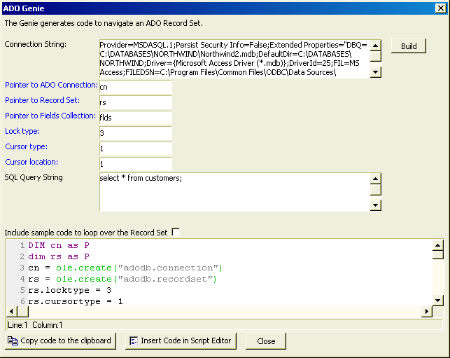

A5_ADO_GENIE()
Syntax
Xbasic_Code as C = A5_ADO_GENIE()
Argument | Description |
Xbasic_Code | Code that can be inserted into a script. |
Description
The A5_ADO_GENIE() function displays the ADO Genie dialog, which generates Xbasic code that will connect to an ADO compatible database.

Supported By
Alpha Five Version 6 and Above
Limitations
Desktop applications only.
Examples
? a5_ado_genie() = DIM cn as P dim rs as P cn = ole.create("adodb.connection") rs = ole.create("adodb.recordset") rs.locktype = 3 rs.cursortype = 1 rs.cursorlocation = 1 'Open the connection cn.open("Provider=MSDASQL.1;Persist Security Info=False;Extended Properties=\"DBQ=C:\DATABASES\NORTHWIND\Northwind2.mdb;DefaultDir=C:\DATABASES\NORTHWIND;Driver={Microsoft Access Driver (*.mdb)};DriverId=25;FIL=MS Access;FILEDSN=C:\Program Files\Common Files\ODBC\Data Sources\Northwind2.dsn;MaxBufferSize=2048;MaxScanRows=8;PageTimeout=5;SafeTransactions=0;Threads=3;UID=admin;UserCommitSync=Yes;\"") 'Open the Record Set rs.open("select * from customers;",cn) 'Get a pointer to the Fields collection DIM flds as P flds = rs.Fields DIM fldscount as n 'Get the number of fields in the Record Set fldscount = flds.Count 'Close the Record Set rs.close() 'Close the Connection cn.close() |
See Also
((Using ADO _ActiveX Data Objects_ with Xbasic|Using ADO (ActiveX Data Objects) with Xbasic))